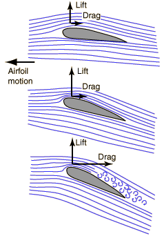

Airfoil
The air across the top of a conventional airfoil experiences constricted flow lines and increased air speed relative to the wing. This causes a decrease in pressure on the top according to the Bernoulli equation and provides a lift force. Aerodynamicists (see Eastlake) use the Bernoulli model to correlate with pressure measurements made in wind tunnels, and assert that when pressure measurements are made at multiple locations around the airfoil and summed, they do agree reasonably with the observed lift.

|
Others appeal to a model based on Newton's laws and assert that the main lift comes as a result of the angle of attack. Part of the Newton's law model of part of the lift force involves attachment of the boundary layer of air on the top of the wing with a resulting downwash of air behind the wing. If the wing gives the air a downward force, then by Newton's third law, the wing experiences a force in the opposite direction - a lift. While the "Bernoulli vs Newton" debate continues, Eastlake's position is that they are really equivalent, just different approaches to the same physical phenonenon. NASA has a nice aerodynamics site at which these issues are discussed. Increasing the angle of attack gives a larger lift from the upward component of pressure on the bottom of the wing. The lift force can be considered to be a Newton's 3rd law reaction force to the force exerted downward on the air by the wing. At too high an angle of attack, turbulent flow increases the drag dramatically and will stall the aircraft. |
A vapor trail over the wing helps visualize the air flow. Photo by Frank Starmer, used by permission.
Bernoulli Equation
References
Eastlake

NASA
Aerodynamics
| HyperPhysics***** Mechanics ***** Fluids | R Nave |